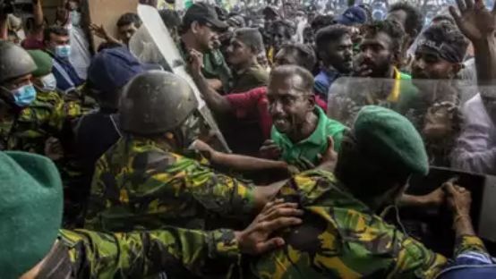

- The crisis is caused inpart by a lack of foreign currency, which has meant that the country cannot afford to pay for imports of staple foods and fuel, leading to acute shortages and very high prices.
- Sri Lanka police shot dead one man and wounded 10 others on Tuesday in the first fatal clash with demonstrators protesting the island nation's crippling economic crisis.
- The island nation is in the grip of its most painful economic downturn since independence in 1948, with severe shortages of essential goods such as fuel and regular blackouts causing widespread misery.
- Huge protests have called for the resignation of the government which is preparing to negotiate an urgently needed bailout with the International Monetary Fund.
- The protest was one of many spontaneous gatherings staged around Sri Lanka on Tuesday, after the country's main petrol retailer hiked prices by nearly 65 percent.


- Footage of police opening fire in the central town of Rambukkana has been widely shared on social media.
- Police said they used "minimum force" to disperse protesters, but many have asked why live bullets were used.
- The incident has been condemned by the UN representative to Sri Lanka as well as the US and EU envoys.
- It comes as the nation is grappling with its worst economic crisis since independence from Britain in 1948.
- Tens of thousands of demonstrators have taken to the streets since Sri Lanka ran out of money for vital imports which has seen the prices of essential commodities skyrocket and caused acute shortages of fuel, medicines and electricity